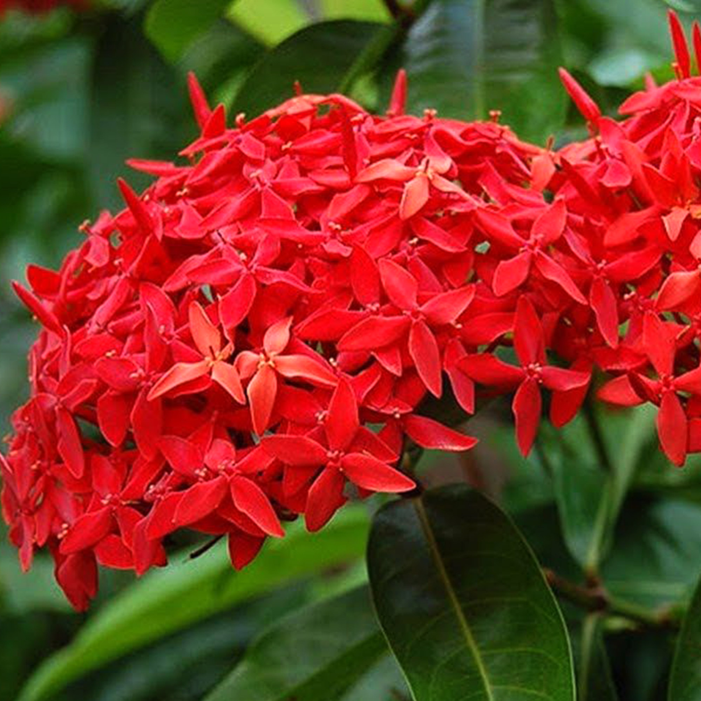

Overview of Paranthi
Botanical Name: Ixora coccinea
Family: Rubiaceae
Botanical Description
Ixora coccinea is an evergreen, dense, multi-branched, hard-wooded shrub. The leaves are glossy, leathery, simple, opposite, sessile, and oblong with entire margins. The flowers are red/yellow and appear in dense corymbose cymes. The fruit is globose, red/yellow/white, fleshy, and contains a single seed.
Distribution
Found in Southern India, Bangladesh, and Sri Lanka. It is also cultivated as an ornamental plant.
Pharmacological Activities
- Astringent
- Antiseptic
- Blood-Purifier
- Sedative
- Antileucorrhoeic
- Antidiarrheal
- Anti-Catarrhal
- Antioxidative
- Antibacterial
- Gastroprotective
- Hepatoprotective
- Antinociceptive
- Antimutagenic
- Antineoplastic
- Chemopreventive
Varieties
Therapeutic Indications
- Diarrhea
- Dysentery
- Chronic ulcers
- Sores
- Fever
- Skin diseases
- Acne, Blemishes
- Leucorrhea
- Dysmenorrhea
- Haemoptysis
- Catarrhal bronchitis
- Loss of appetite
- Hiccup
- Redness of Eye
Medicinal Qualities of Paranthi
- Quality (Guna): Laghu (Light to digest)
- Action (Karma): Graahi
- Effect on Dosha: Shleshmala (Increases Kapha Dosha), Vatapittahara (Balances aggravated Vata and Pitta Dosha)
Chemical Constituents
- Lupeol
- Ursolic Acid
- Oleanolic Acid
- Sitosterol
- Rutin
- Leucocyanidin
- Anthocyanins
- Proanthocyanidins
- Glycosides of Kaempferol and Quercetin
Classical Categorization
- Bhavaprakasha Nighantu: Pushpavarga
- Kaiyadeva Nighantu: Oshadi Varga
- Madanapaala Nighantu: Karpuradi Varga
- Raja Nighantu: Karaveeradi Nighantu
Formulations
- Paranthyadi Thailam: A herbal oil used mainly in the treatment of dermatitis, spider bites, etc.
- Karappan Thailam: An Ayurvedic oil used mainly in the treatment of skin disorders.
Scientific Classification
- Kingdom: Plantae
- Division: Angiosperms
- Class: Eudicots
- Order: Gentianales
- Family: Rubiaceae
- Genus: Ixora
- Species: I. coccinea
Vernacular Names
- English: Jungle Geranium, Flame of the Woods, Jungle Flame
- Sanskrit: Bandhujivaka, Paaranti
- Hindi: Rugmini
- Kannada: Kepula
- Bengali: Rangan
- Malayalam: Thetti, Techi, Chethi
- Tamil: Sinduram, Vedchi
- Telugu: Koranan, Mankana
- Assamese: Rangan, Rogiyal-phul, Ronga-rangan